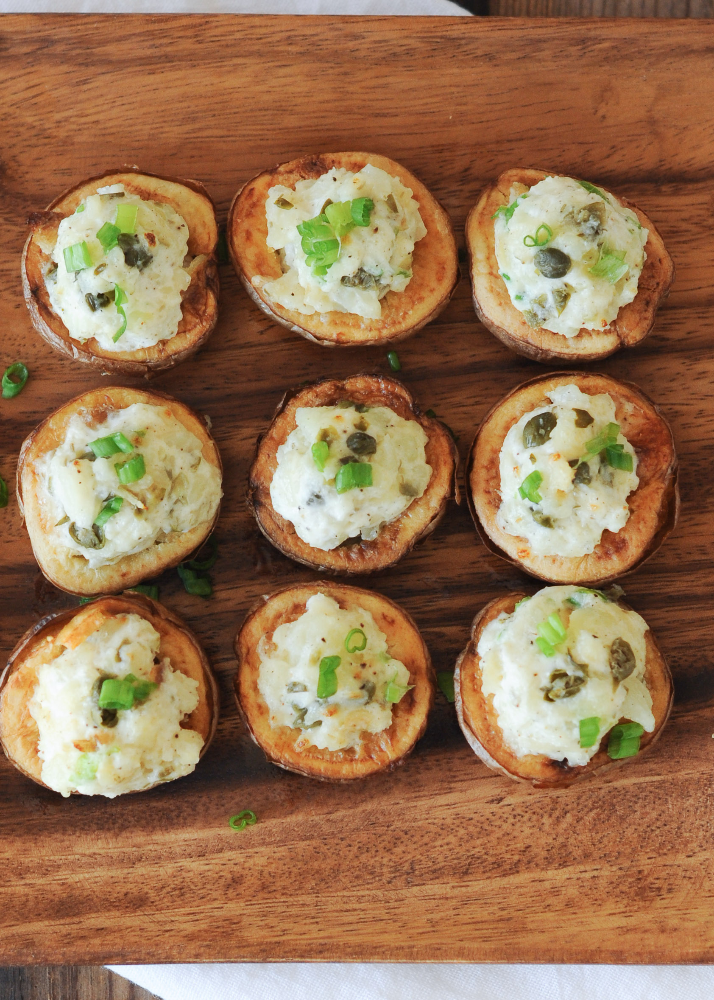
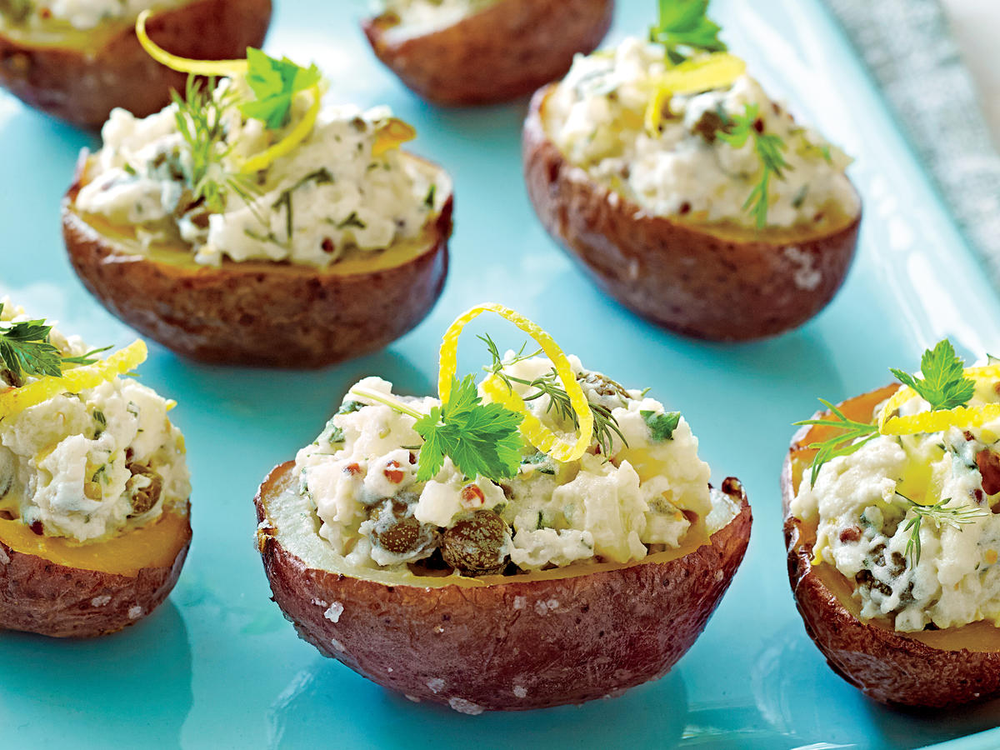
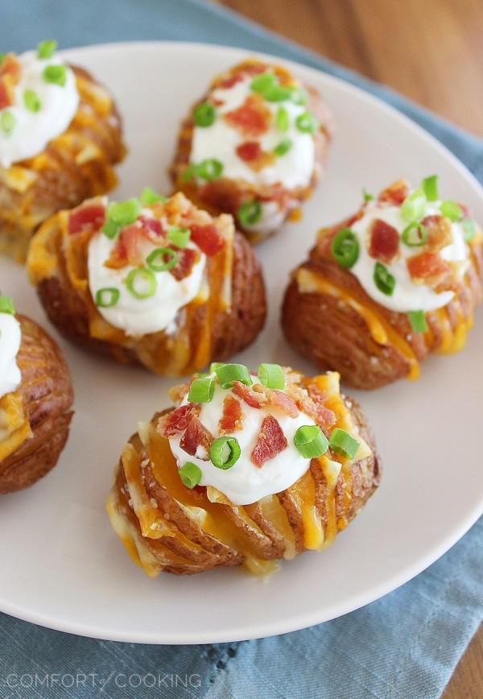
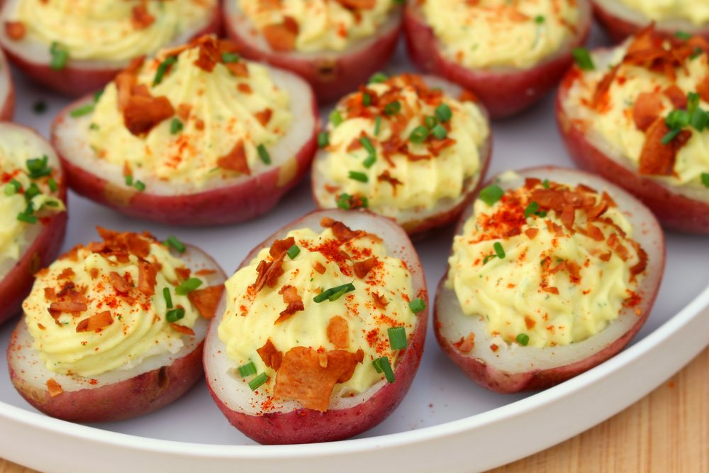

Lemon-Caper Parmesan Potato Salad Bites
This is a great appetizer. It is more a mini stuffed baked potato instead if a potato salad.
Transports well to a party in a mini muffin pan. It comes from a Cooking Light issue.
Many of the ingredients could be changed for variety.
and i like this dish because
Ingredients
- 12 small red potatoes, halved (about 1 1/4 pounds)
- 2 teaspoons olive oil
- 1/2 cup light sour cream
- 2 tablespoons minced fresh chives, divided
- 2 tablespoons butter, melted
- 2 tablespoons finely chopped drained capers
- 1 1/2 teaspoons lemon juice
- 1/2 teaspoon kosher salt
- 1/2 teaspoon freshly ground black pepper
- 2 tablespoons grated Parmesan cheese
Directions
- Preheat oven to 450°.🤗
- Combine potatoes and oil; toss to coat. Arrange potatoes, cut sides down, in a single layer on a parchment paper–lined baking sheet.
Bake at 450° for 20 minutes. Turn potatoes; bake 10 minutes. Remove and cool 20 minutes.🤭
- Preheat broiler to high.🤐
- Using a paring knife, carefully cut a circle in the cut side of potatoes.
Using a melon baller or small spoon, remove pulp from potato, leaving a thin shell.
Combine pulp, sour cream, 1 tablespoon chives, and next 5 ingredients (through pepper).
Evenly fill potato shells with filling; sprinkle with cheese and remaining 1 tablespoon chives.😯
- Broil potatoes for 2 minutes or until cheese is lightly browned.😲
This dish is incredible and you can feel it with every bite. starting from the crunchy top of the potato and the softness as your teeth dig deeper
the taste of the salad that mixes together with the potato and the taste of every single ingredient that makes it a tasty dish :).



